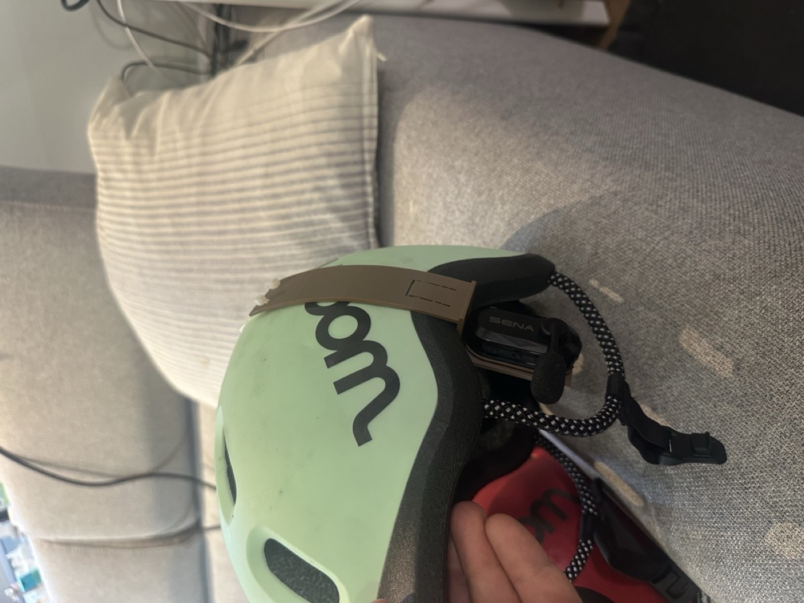
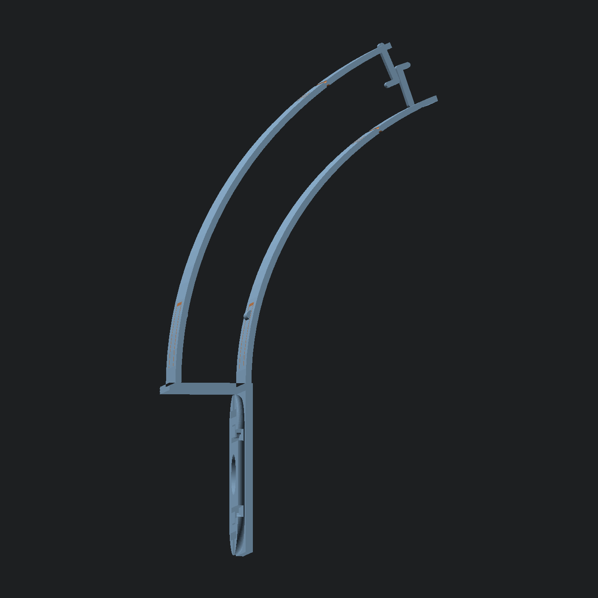
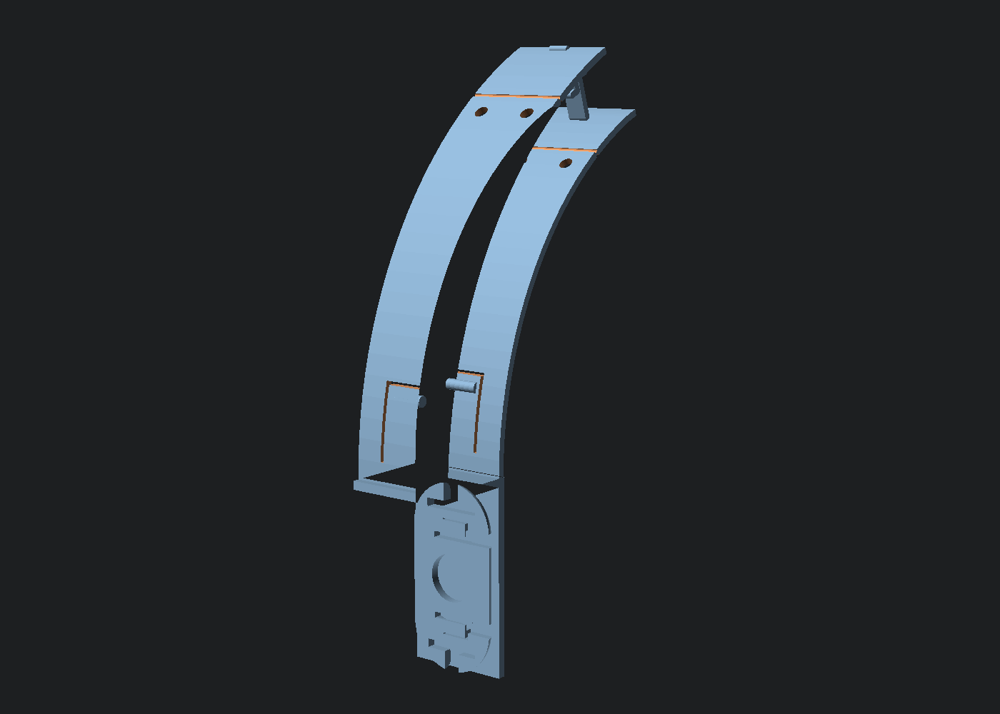

OpenSCAD · Claude Code · PETG · a kids helmet
A helmet clip designed by something that cannot see
My son rides ahead of me and turns around every twenty seconds to check I am still there. I bought us a pair of Sena BiKom 20 bike intercoms so he can keep his eyes on the road and hear me in his ear, and I can let him ride further. The clip Sena ships is made for the brim of a cap; a woom kids helmet has a rim about 24 mm thick. So I had Claude Code design a clip in OpenSCAD. It never saw the helmet. Twenty versions in two days, and it sits. This is the whole thing: the tools, every iteration, the two ideas that came from a YouTube timestamp and from me, and what I would not do again.

Why OpenSCAD and not a CAD program
OpenSCAD is CAD written as text. There is no mouse and no dragging; a part is a script of cylinder(), polygon(), linear_extrude() and boolean operations, with numbers at the top. That is exactly the shape of thing a language model is good at. Every request I made in plain words became a named parameter, every version is a one-line diff, and the model can render the result headless (openscad -o part.stl part.scad) and check it without ever opening a window.
rim_t = 24; // rim thickness at the ear (mm)
hook_o = 140; // outside: rim edge -> vent, along the shell
hook_i = 120; // inside: rim edge -> vent, along the foam
shell_r = 130; // shell curvature radius
over = 5; // extension past the vent edge
tip_r = 65; // radius of that extension
hook_d = 13; // tooth radial length
hook_b = 3; // J-hook depth
tab_l = 22; // leaf-spring tongue length
btn_out = 1.2; // button stands proud of the arm
zip_at = 0.80; // zip-tie holes at 80% of each arm
seam_at = 0.85; // snap-off seam at 85%The important consequence: the model does not need to see. It needs numbers, and a human to say whether the print matched what the numbers meant.
Do not design the hard part
The part that has to fit the Sena unit precisely is the mounting plate with its four rail hooks. I did not want to reverse-engineer that. Thingiverse has a replacement strap mount for the BiKom 20 by HenryHase (CC BY-NC), 54 x 27 x 3 mm. Claude read the binary STL with numpy to get its bounding box and which face carries the hooks, then import("HelmetClip.stl") in OpenSCAD, rotated so the device face points away from the head, and sunk 0.5 mm into the clip's wall so the union is solid. A proven plate; we only build it a body.
This went wrong once, in version 15: the plate's top edge sat at the rim line, and the bridge under the rim overlapped the top 2.5 mm of the oval and filled the rail slot. The unit would not click in. One screenshot from Bambu Studio, and the fix was drop = wall + 1.
I am the eyes
The model cannot see a helmet, so the measurements came from the iPhone Measure app: 7 cm from the rim edge to the nearest vent hole on the outside of the shell, 6 cm on the inside. Two photos. Both arms are arcs concentric with the shell, with the same centre and different radii, so the inner one is naturally shorter, and each got its own measured length plus 5 mm of overshoot so the tooth lands inside the hole rather than on its lip. The first print at those lengths was too short in practice (arc length is not rise), so the arms doubled to 140 / 120 mm. That is the kind of thing only the person holding the part knows.

YouTube as the reference book
I wanted something compliant at the base so the clip grips a range of rim thicknesses instead of one exact number. I sent the model a Slant 3D video on snap fits with a timestamp (5:56). The video download was blocked, so it worked from the captions alone, and pulled the right idea out: a horizontal cantilever leaf cut out of the wall itself, lying in the print plane, with a round button at the tip. Printed on its side, the leaf flexes within the layer plane and never tries to pull layers apart.
In the part that became a U-slot through each arm near the base, leaving a 12 x 22 mm tongue rooted at the bottom, with a 1.6 mm radius button standing 1.2 mm proud on the helmet side. Two of them, one on the shell, one on the foam, so the rim is pinched from both sides.
The buttons came out pointing the wrong way twice. Version 18 had both pointing out; version 19's first cut had one in and one out. The reason is the honest technical lesson of the whole build: the arms are built as arcs around a centre inside the helmet, so on the outer arm "toward the helmet" means a smaller radius and on the inner arm it means a larger one. Looking at the render did not settle it; what settled it was slicing the exported STL in numpy and printing the X extent of the button against the arm's face. Measure the mesh, not the picture.
The ideas that were mine
- Both arms into the vent hole. The first curved design only hooked from the outside. Going in from both sides, closing on the hole, turns the hole into a locator: the clip cannot be pulled back down.
- J-teeth that latch. Each tooth is 13 mm long, so both cross past the shell midline; the outer one sits 3 mm above the vent line and curls down, the inner one 3 mm below and curls up. Squeeze the arms together and the rounded ends slide past each other and hook with ~2 mm of overlap, held in tension by the arms' preload. In version 16 the outer tooth was rooted 3 mm past the end of its arm, floating in air; version 17 anchors both inside the arm.
- Plan B built in. If the latch does not hold, two 4 mm zip-tie holes at 80% of each arm, drilled along the arm normal so a tie goes straight through both, and a snap-off seam at 85%: a 0.6 mm groove on each face leaves 0.8 mm of PETG. Bend the tip back and forth and it goes, and the zip ties take over.

All twenty, in order
| v | What changed |
|---|---|
| 1 | A C-clip over the rim with a shelf inward carrying the plate. Wrong direction entirely: the unit should hang under the rim at the ear, like the hat clip does. |
| 2-4 | Plate moved to the outer face under the rim, then flipped so the correct face meets the unit, then rotated 90 degrees so it slides on top-to-bottom like the hat clip. |
| 5-6 | A tapered 1.6 mm spring arm with a round bump for tolerance; then 50% deeper jaws with a bump on both sides. |
| 7-8 | The outer arm becomes a long curve up the shell with a tooth into the vent; then both arms curve, concentric, closing on the hole. |
| 9 | The plate hangs from the inner edge of the rim, device face out, so the unit sits right under the rim. |
| 10-14 | Measured arm lengths 70 / 60 mm; a tighter-radius tip extension; teeth doubled; then the whole arms doubled to 140 / 120 mm. |
| 15 | J-teeth that latch; compliant wings at the base. |
| 16-17 | The bridge had filled the rail slot (fixed with drop); a tooth was floating past the arm end (anchored). |
| 18-19 | Wings out so the part lies flat; leaf-spring tongues with buttons cut into each arm; buttons made to point inward, verified on the mesh. |
| 20 | Zip-tie holes at 80% and a snap-off seam at 85%. |
Every one of those was one message from me, usually with a slicer screenshot, and a new STL within a minute. I was QA; it was the modeller.
Print settings
PETG, not PLA: the leaf springs and the long arms creep and crack in PLA. Printed lying on its side (the Y axis up), 4 walls, 100% infill on a part this thin anyway. That orientation is what makes the tongues flex in the layer plane. Both arms are 2 mm thick, which gives a light spring; the arms sit 1 mm closer to the helmet than the measured surface (preload) so they clamp gently even before the teeth engage.
What I would not do again
- Trust a render to tell me which way a feature points. Slice the STL and print numbers.
- Give "inward" and "outward" as instructions without a frame. The SCAD file now states its frame at the top: X into the helmet, Y along the rim, Z up. Every later message was in those terms.
- Measure along the surface and assume it is the rise. Arc length on a 130 mm radius is not height; the arms had to double.
- Skip the plan B. The zip-tie holes and the seam cost nothing and mean the twentieth print is the last one whatever the latch does.
Files
- woom_clip_v20.scad - the parametric source. Needs the Thingiverse plate next to it as
files/HelmetClip.stl. - woom_clip_v20.stl - print-ready, my helmet's numbers.
- HelmetClip.stl - the Sena BiKom 20 strap-mount plate by HenryHase, Thingiverse thing 7354158, CC BY-NC. So is this clip, by inheritance: not for sale.
- all-20-versions.zip - every SCAD and STL from v1 to v20, if you want to watch it happen.
Want one for a different helmet?
Measure the rim thickness, the rim-to-vent distance outside and inside, and guess the shell radius. Those are the first six lines of the SCAD. Everything else follows.